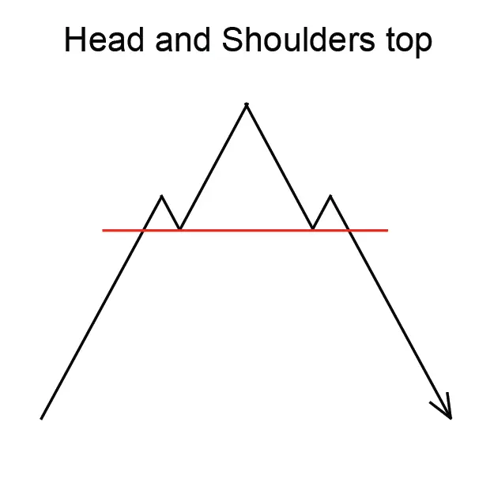
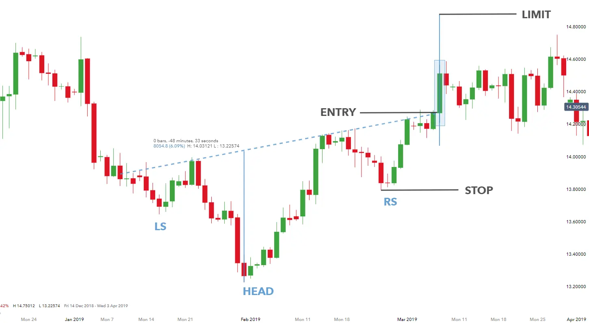

Head And Shoulders (सिर और कंधे) पैटर्न एक रिवर्सल पैटर्न है जो एक उत्कृष्ट प्रवृत्ति में गठित होता है और एक
अवनति प्रवृत्ति की दिशा देता है। इस पैटर्न का संगठन तीन चोटीयों के द्वारा होता है, जिसमें एक सिर होता है और बाकी दो कंधे होते हैं।
सिर सबसे ऊची चोटी होती है और कंधों की ऊचाई सिर की तुलना में कम होती है।
Head And Shoulders (सिर और कंधे) पैटर्न की पहचान करने के लिए, आमतौर पर तीन चोटियों की खोज की जाती है।
इनमें से सबसे ऊची चोटी को सिर के रूप में माना जाएगा और कंधों को सिर की तुलना में कम प्रतिष्ठित किया जाएगा।
Head And Shoulders पैटर्न एक विश्वसनीय रिवर्सल पैटर्न है, हालाँकि यह हमेशा सही ढंग से काम नहीं करता। ट्रेडर्स को अनिवार्य रूप से
अन्य बाजार संकेत जैसे कि आवृत्ति और RSI (सापेक्षिक शक्ति सूचकांक) का विचार करना चाहिए, ताकि पैटर्न को सही तरीके से
पहचाना जा सके और एक लाभप्रद व्यापार किया जा सके।
Head And Shoulders (सिर और कंधे) पैटर्न को व्यापार करने के लिए, ट्रेडर्स आमतौर पर सिर के निचले स्तर पर
एक स्टॉप-लॉस स्थापित करते हैं। लाभ का लक्ष्य आमतौर पर सिर और कंधे पैटर्न की पूरी ऊचाई होती है।
